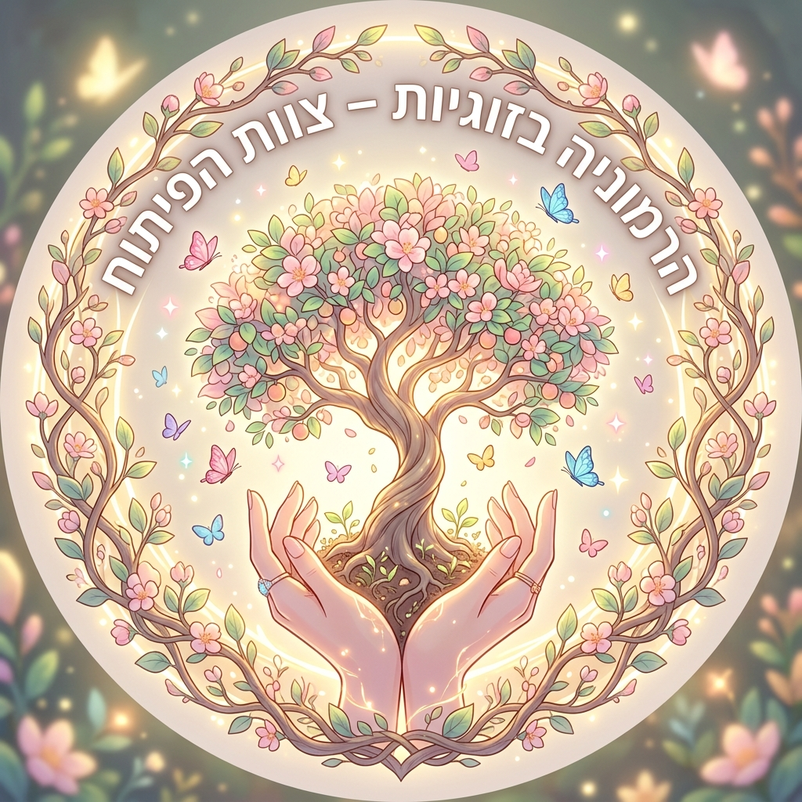
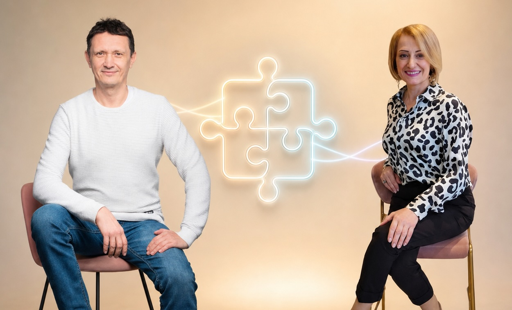
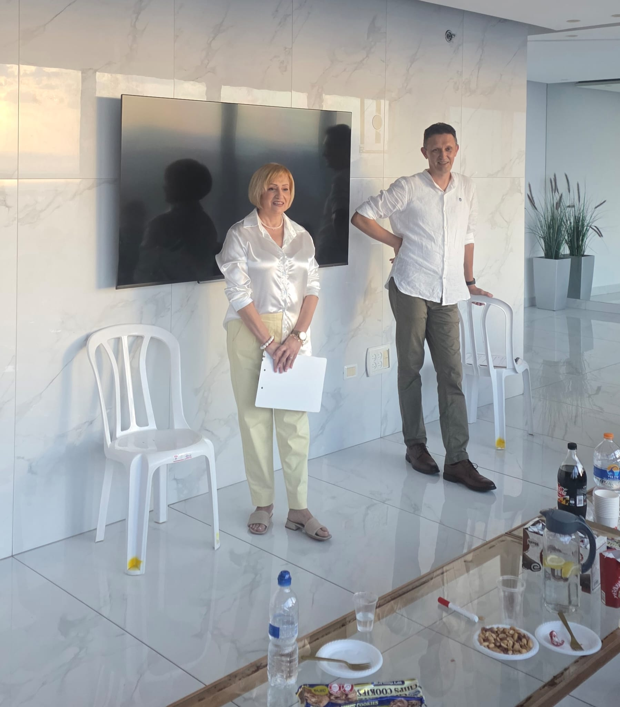

WIZO, נהריה
יום שלישי · מפגש על קרבה ועל שמירה על עצמנו בתוך הזוגיות.

קרן ואלכסייהרצאה · צפון · אוקטובר 2026
כשמנסים לשמור על הקשר, לפעמים מתחילים לוותר על מה שחשוב לנו. במפגש נבחן איך זה קורה ואיך אפשר להחזיר לעצמנו מרחב בחירה.

הרעיון
לפעמים שותקים כדי לא לריב, מסכימים כשמשהו בפנים מתכווץ, או עסוקים בניחוש מה האדם השני צריך. כך אפשר לאבד קשר עם הרצון והצרכים שלנו.
נבחן מה קרה בפועל, מה פירשנו, אילו צרכים נשארו בלי מילים ואיזה דפוס חוזר. המטרה היא להבין את המנגנון ולראות אילו אפשרויות עומדות בפנינו.
אוקטובר בצפון
יום שלישי · מפגש על קרבה ועל שמירה על עצמנו בתוך הזוגיות.
יום ראשון · מפגש על אותו נושא במסגרת האירוע של נעמת.
בקבוצת ה-WhatsApp שלנו נשתף מידע על המפגשים והסמינרים הבאים.
כניסה ישירה לקבוצת WhatsAppבמפגש

מי מדברים
קרן מביאה מבט על הקשר בין בני זוג, על צרכים ועל המרחב המשותף. אלכסיי מביא גישה מערכתית לזיהוי דפוסי תגובה ואמונות חוסמות. יחד אנחנו מחברים שתי נקודות מבט על מה שקורה בתוך הזוגיות.
אנחנו מציגים מצבים מוכרים מהחיים, בוחנים את המנגנון שמאחוריהם ומשאירים מקום לבחירה האישית של כל משתתף.
הצעד הבא
בטופס אפשר לבחור אילו נושאים בזוגיות מעניינים אתכם ולכתוב במילים שלכם על מה תרצו לדבר במפגש הבא. אחרי השליחה יופיע גם הקישור לקבוצת ה-WhatsApp, שבה נעדכן על המפגשים הבאים. אפשר גם להצטרף ישירות לקבוצה, או לכתוב לאלכסיי דרך Gmail בדפדפן.